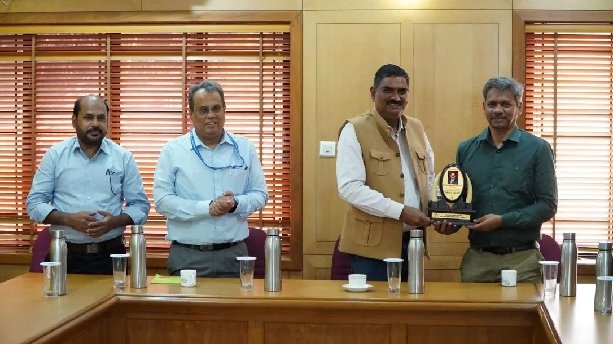

ISTE FISAT Chapter
The Indian Society for Technical Education (ISTE) is the leading National Professional non-profit making Society for the Technical Education System in our country with the motto of Career Development of Teachers and Personality Development of Students and overall development of our Technical Education System. Being the only national organization of educators in the field of Engineering and Technology, ISTE effectively contributes in various missions of the Union Government. The strength of ISTE is the strong base it has in technical education institutions in the country. At present, the ISTE has a very large and an effective membership base consisting of 124024 Life Members, 5 lakh Student members, 2734 Institutional Members, 1369 Faculty Chapters, 1479 Student Chapters at institutional level and 17 Sections at State level.
The major objective of the ISTE is to provide quality training programmes to teachers and administrators of technical institutions to update their knowledge and skills in their fields of activity and to assist and contribute in the production and development of top quality professional engineers and technicians needed by the industry and other organisations.
FISAT became an Institution member of ISTE in October 2004 with Institutional membership no: IM1202. Subsequently, a Student Chapter was formed in the college with chapter no: KER 031. This student chapter has been identified as the Best Student Chapter of ISTE Kerala Section in the year 2006. A Faculty chapter was also formed in the college in the year 2014 with chapter no: KE 076. The inauguration of the chapter was organized on 9th July 2015 by Shri. V.A. Shamsudeen, Deputy Director, SITTTR. Currently ISTE Faculty Chapter of FISAT comprises around 100 life time members. ISTE chapter of FISAT is regularly organizing FDP’s, Invited talks, webinars, workshops etc for the benefit of staff and students.
The ISTE FISAT Chapter currently has a strong membership base comprising over 100 faculty members and more than 1,700 student members, reflecting its active engagement and leadership in promoting technical education and professional development.
The ISTE FISAT Faculty Chapter has achieved remarkable recognition at both the state and national levels for its consistent excellence in academic and professional activities. The faculty chapter received the Best Chapter Award from the ISTE Kerala Section for two consecutive years, 2024 and 2025. Continuing its outstanding performance, in 2026, the chapter was again honoured for conducting the highest number of activities among faculty chapters in the Kerala Section.
Office Bearers :
Chairman: Dr. P. R. Mini, Vice-Principal
Secretary and Treasurer: Dr. Asha Joseph, Professor, Dept. of CE.
Faculty Advisor to Student’s Chapter: Mr. Soumya S Raj, Assistant Professor (Sr.Gr.), Dept. of CSE.
Coordinator, Faculty Chapter : Ms. Anisha Joseph, Assistant Professor (Spl. gr.), S&H
Coordinator, Student Chapter : Ms. Minu Kuriakose, Assistant Professor (Sr. gr.), ECE
Executive Committee Members :
Dr. Deepa Mary Mathews, Associate Professor, MCA
Dr. Surya Natarajan, Associate Professor, EEE
Mr. Benoy Abraham, Assistant Professor (Sr. gr.), ECE
Ms. Honey Devassy, Assistant Professor (Sr. gr.), EIE
Mr. Rahul V, Assistant Professor (Spl. gr.), ME

Mr. Shimith P.R., Chairman FISAT honouring Dr. P.K. Desai, ISTE President during his visit to the institute on 22.07.2025

Dr. P.K. Desai with the Chairman, Principal, Management Committee, HoDs, and ISTE Executive Committee members

Dr. Mini P.R., (Vice Principal), Prof. Jayakumari V ( ISTE State Executive Committee Member),Dr. P.K. Desai ( ISTE President), Dr. Vijayakumar K ( Chairman, ISTE Kerala Section ), Dr. Jacob Thomas V ( Principal), Mr. Shinto Sebastian ( PRO)
Achievements Of ISTE Fist Chapter
The ISTE FISAT Faculty Chapter has achieved remarkable recognition at both the state and national levels for its consistent excellence in academic and professional activities.
The faculty chapter received the Best Chapter Award from the ISTE Kerala Section for two consecutive years, 2024 and 2025. Continuing its outstanding performance, in 2026, the chapter was again honoured for conducting the highest number of activities among faculty chapters in the Kerala Section.

Receiving the chapter with maximum number of activities award during the 36th state faculty convention held at Vidya Engineering College, Thrissur – Jan 2026

Receiving the best faculty chapter of ISTE Kerala Section award from Dr. Usha Titus (IAS) during the 35th state faculty convention held at Marian Engineering College, Thiruvanthapuram– Jan 2025

Receiving the best faculty chapter of ISTE Kerala Section award from Dr. Saji Gopinath, Vice Chancellor, APJKTU during the 34th state faculty convention held at Federal Institute of Science and Technology, Angamaly – Jan 2024

At the national level, FISAT was conferred the “Best Emerging Institute of the Country Award” for the year 2024–2025 by Indian Society for Technical Education (ISTE) Headquarters. The award was presented during the National Convention held at Pondicherry in November 2025.
Adding to these accomplishments, Dr. Asha Joseph, Professor CE & Secretary of the ISTE FISAT Chapter, received the Best Faculty of Engineering College Award from the ISTE Kerala Section in recognition of her exemplary contributions to technical education and chapter activities.

Dr. Asha Joseph receiving the Best Teacher Award of ISTE Kerala Section during the 36th State Faculty Convention held at Vidya Engineering College, Thrissur – Jan 2026
FISAT also had the privilege of hosting the 34th Annual Faculty Convention of ISTE Kerala Section on 20 January 2024. The convention witnessed participation from more than 250 faculty members representing various engineering and polytechnic institutions across Kerala, making it a significant academic gathering.

Inauguration of 34th faculty convention held at FISAT on 20th January 2024
Faculty Chapter – Major Activities
AY 2025-2026
Two day national Conference on Sustainable Futures : Integrating Technology, Environment and Society
The ISTE FISAT Chapter organized a two-day National Conference on “Sustainable Futures: Integrating Technology, Environment and Society” on 16 and 17 April 2026. The conference was inaugurated by Er. Anish Mathews, Assistant Vice President & Head – Strategy, V-Guard Industries Ltd. Mr. Shimith P.R., Chairman, FISAT, presided over the function.

Technical Talk – Citizen Centric Awareness on Telecommunications
ISTE FISAT chapter has organised a technical Talk on Citizen Centric Awareness on Telecommunications on 30.12.2025. The event was initiated by Kerala Licensed Service Area (LSA), Department of Telecommunication, Kerala. Citizen centric awareness activity regarding Telecommunications is one of the prime role of this office. Mr Kamalsanan P K, Consultant, Department of Telecommunication and Mr. Logeshkumar ITS, DoT were the resource persons.

Technical Talk – Industry on Campus
ISTE FISAT Chapter in association with IEDC, IDEA lab, FAB lab and IIC has organised a technical talk on “Industry on Campus”. The session started at 11.00 am on 12.12.2025. . Smt. R. Smitha, Joint Director, Directorate of Industries and Commerce, Government of Kerala was the resource person for the program.

Engineer’s Day Quiz Competition
As part of the Engineers’ Day Celebrations 2025, FISAT organized a Technical Quiz Competition for B.Tech students on 15 September 2025 from 2:45 PM to 3:45 pm. The event was organised by the Indian Society for Technical Education (ISTE) with the theme “Deep Tech & Engineering Excellence: Driving India’s Techade”.
AY 2024-2025
National Conference on
Edge AI : Optimising Machine Learning for real time processing and IoT applications
ISTE FISAT Chapter has organised a national conference on “Edge AI : Optimising Machine Learning for real time processing and IoT applications” on 30.04.2025. The conference was inaugurated by Dr. Vijayakumar K, Chairman, ISTE Kerala Section. Mr. Shimith P.R., Chairman FISAT presided over the function. Dr. Asha Joseph, Secretary, ISTE chapter & program chair of the conference welcomed the gathering. Dr. Mini P.R., Vice Principal FISAT & Chairman of the ISTE Chapter felicitated the gathering during the inaugural session. Dr. Sumod Sundar, HoD, Centre for Artificial Intelligence, TKM College of Engineering, Kollam delivered the keynote lecture.

Technical Talk on AI tools for Teachers
A talk on AI tools for teachers was organised by ISTE Faculty chapter of FISAT in association with ECE Department and NDLI Club, FISAT on 10-09-2024 at Library seminar hall. The resource person of the event was Mr. Basil K Jeemon, Assistant Professor of ECE Department. The objective of the talk was to get an insight on various modern AI tools that can be used for teaching and research purposes.

AY 2023-2024
Institute Innovation Day Celebration & Technical Talk on Ambidextrous Organizations and Structure
The institute’s Innovation Day was celebrated on 16.10.2023 in the Main Seminar Hall. The program organised jointly by ISTE FISAT Chapter and Institute Innovation Council started at 9.30 am. Dr Mini P R, the Principal-in-charge welcomed the gathering. Mr Shimith P R, Chairman FISAT, inaugurated the program. Dr C Sheela, Director – Research and Development felicitated the function. Mr Rakesh Nair, Marketing Head, Svojas Farms delivered the Institution’s Innovation Day message.

Student Chapter Activites
2025-2026
- TANTRA
The first inter collegiate national level Techfest organised by ISTE FISAT student chapter was inaugurated by Dr. Pratapsinh Desai, President, ISTE New Delhi on 27.02.2026. Dr. K .Vijayaakumar, Chairman, ISTE Kerala section was the special guest for the event.


ISTE faculty chapter and student chapter executive committee members with ISTE President Dr. P.K. Desai ( President, ISTE New Delhi), Dr. Vijayakumar ( Chairman, ISTE Kerala Section), Mr. Shimith P.R., ( Chairman , FISAT ) Dr. Jacob Thomas V.(Principal, FISAT) Dr. Mini P.R. ( Vice Principal) and other management committee members of FISAT.
TANTRA – Competitions
- Vertical Ventures, conducted on 27.02.2026 as part of TANTRA, challenged participants to design and build innovative towers with strength and precision. The competition tested teamwork, creativity, structural stability and strength. It provided an exciting platform for students to showcase their engineering skills and rise to the challenge.

- Codex, the 48-hour hackathon held on 27th February 2026 – 1st March 2026 as part of TANTRA, brought together innovators to develop impactful solutions from the ground up. Participants collaborated, brainstormed, and coded continuously to transform ideas into working prototypes. The event tested creativity, endurance, and technical skills in an intense and competitive environment

TANTRA – Workshops
- CHIPCRAFT, conducted on 28.02.2026 as part of TANTRA, was a hands-on VLSI design workshop covering the complete circuit design flow. Participants gained practical experience in designing integrated circuits using industry-relevant tools and techniques.

- Spinx, conducted on 28.02.2026, was a hands-on drone workshop guiding participants through UAV development from assembly to flight. Participants built and tested their own drones while learning key flight principles under expert supervision. The workshop enhanced practical skills and provided an exciting experience in drone technology and innovation.

Talk Session & Musical Night
Adding to the vibrancy of the event, Mehfil Night, a musical extravaganza by renowned playback singer and FISAT alumnus Mr. Sachin Warrier, was one of the major attractions of the fest. A talk session was also conducted

- ARCANE 2.0
The inaugural ceremony of ARCANE was held on 26th September 2025. Mr. Shimith P.R., Chairman, FISAT presided over the function. The formal inauguration and lighting of the lamp were performed by the Chief Guest, Dr. Sumod Sundar, Associate Professor, Providence College of Engineering, who also delivered the keynote address.

ARCANE 2.0 – Workshops
- The Arduino Workshop was held on 26.09. 2025. The session was handled by Mr. Manoj Kumar M, who guided the participants through various topics such as Arduino IDE setup, coding basics, sensor interfacing, and simple project development.
- The Logic Craft event was a virtual simulation designed to introduce participants to the fundamentals of Programmable Logic Controllers. It was conducted at the CCF Lab on 26.09. 2025.
- The Pottery Workshop was organized on 25.09.2025 at FISAT Auditorium with the aim of introducing participants to the traditional art of pottery and encouraging creativity through hands-on experience. The workshop was conducted by Mr. V.K. Jayan, a skilled artisan known for expertise in clay modeling and pottery design.

ARCANE 2.0 – Competitions
- Perplexit, an escape room competition, was a fun-filled experience that brought out the best in teamwork and curiosity. Participants navigated through cleverly crafted puzzles involving basic circuits and light technical challenges, making the game engaging yet accessible to all.
- WEBlaze was conducted in the CCF Lab 8 on 25.09.2025. Each team collaboratively worked on the distinct front-end design challenge, in which participants were required to plan and implement a complete interface based on a given brief.
- IDEATHON competition was organized to provide students with a platform to showcase their creativity and problem-solving skills by proposing innovative and feasible ideas within a limited timeframe. The main focus was on encouraging critical thinking, teamwork, and effective communication.

- BRIDGE-A-THON competition was to design and construct the strongest, most innovative bridge using provided materials where the students were able to compete in teams.

- The event CAD Relay was a unique team-based CAD drafting challenge where students worked collaboratively on a common drawing in a relay format. The objective of the event was to test participants’ proficiency in AutoCAD along with their ability to adapt, maintain clarity, and ensure smooth teamwork while drafting.
- The event CodeShift was conducted on 26.09. 2025. Each team member was assigned a distinct problem statement, for which they initially prepared an algorithm. The unique format of the competition distinguished it from conventional coding contests.